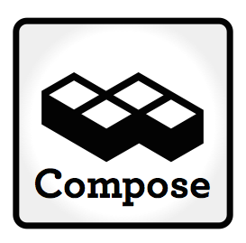

Our Elasticsearch Beta - An Update
We’re really happy with how the beta roll out for our new hosted database, Elasticsearch, has been going. It is great to see how many companies are already coming on board to work with our hosted platform and are already exercising it with their data  search and analytics work. So at this point in the beta, we thought it would be worth explaining a bit more about how we are rolling out ElasticSearch, what we’re doing, what we’re not doing and what we’re going to be doing.
First time users
The initial rollout has, for new signups, been more complicated than we’d hoped for. This is because we assumed that existing customers would be the majority of initial users for our Elasticsearch beta. We set the system up to only show the Elasticsearch option to people with exisiting databases with us. This has meant new signups having to create a MongoDB database so they could get to the “Create an Elasticsearch database” option.
To alleviate this problem, we’re bringing forward our work on integrating Elasticsearch options in the main system and will be bringing it online during the beta. This is part of a bigger internal change that will enable us to expose more capabilities of the Compose platform.
Data import
Some customers have asked if they can use Elasticsearch Rivers. For those unfamiliar with them, river’s are an Elasticsearch mechanism for importing data continuously into Elasticsearch indexes. Unfortunately, rivers are already marked to be deprecated by Elasticsearch in the near future. We haven’t enabled River support partly because of this.
Despite their usefulness early on in an implementation, Rivers run on a database node as a singleton and can contribute to instability and performance degradation. As we’ve been focussing during the beta on stability and performance, we considered them as not conducive to delivering the reliable service people want and so we do not have any current plans to enable them.
What we are working on is a stable, reliable alternative to Rivers. We have a solid set of tools at the backend for managing import and we’re working on exposing those tools to users with a clean, easy to use user interface. We’ll have more on that when we’re ready to release it. In the interim, if you are looking to import data into your Elasticsearch, get in touch with us at support@compose.io and we’ll see how we can help you or get you on the right track.
Plugin support
Plugins are used to extend the functionality of Elasticsearch though at the start of the beta we only exposed site plugins, like ElasticHQ and Kibana, to users to make it easier for them to work with Elasticsearch from their browsers. We are on schedule to introduce, during the beta, a carefully vetted range of plugins which users will be able to activate from the web front end.
This initial list will not be a large list. We are mindful of security and stability so we do not expect to be enabling some classes of plugin, such as scripting and as we already mentioned we won’t be activating river plug-ins. What we will be enabling will be some language analysis, character set normalisation and type handling plugins. It won’t be the last set of plugins we’ll be enabling though – this is just the start of our work to enhance the Compose Elasticsearch experience.